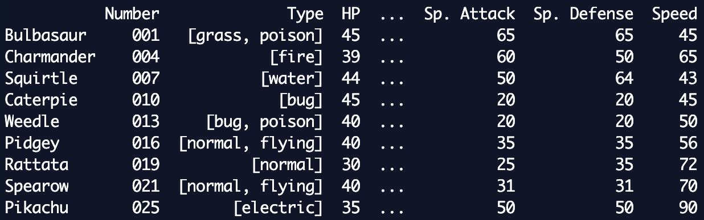

Python Pandas

1nFwoRks!We are going to cover:
- What is Pandas
- Why is it useful
- Installing - Anoconda
- What it can do
What is Pandas?
- Library for data manipulation and analysis
- Highly optimised for this purpose
- Provides powerful, expressive and flexible data structures
Why is it useful
- You can do manipulation and analysis of data WAY more easily!
Data Frames
- A very useful data structure
- 2 dimensional
- Think Excel spreadsheet
Now imagine we had a dictionary of information on pokemon...
pokemon = {
"Bulbasaur": ("001", ["grass", "poison"], 45, 49, 49, 65, 65, 45),
"Charmander": ("004", ["fire"], 39, 52, 43, 60, 50, 65),
"Squirtle": ("007", ["water"], 44, 48, 65, 50, 64, 43),
"Caterpie": ("010", ["bug"], 45, 30, 35, 20, 20, 45),
"Weedle": ("013", ["bug", "poison"], 40, 35, 30, 20, 20, 50),
"Pidgey": ("016", ["normal", "flying"], 40, 45, 40, 35, 35, 56),
"Rattata": ("019", ["normal"], 30, 56, 35, 25, 35, 72),
"Spearow": ("021", ["normal", "flying"], 40, 60, 30, 31, 31, 70),
"Pikachu": ("025", ["electric"], 35, 55, 40, 50, 50, 90)
}
Doing analysis of that data might be a bit of a pain
For starters, what even is this data?!
For example, if we wanted to find out who was the fastest (last bit of data):
fastest = ("", 0)
for mon, data in pokemon.items():
speed = data[7]
if speed > fastest[1]:
fastest = (mon, speed)
print(fastest)
With pandas...
import pandas as pd
pokemon = {
"Bulbasaur": ("001", ["grass", "poison"], 45, 49, 49, 65, 65, 45),
"Charmander": ("004", ["fire"], 39, 52, 43, 60, 50, 65),
"Squirtle": ("007", ["water"], 44, 48, 65, 50, 64, 43),
"Caterpie": ("010", ["bug"], 45, 30, 35, 20, 20, 45),
"Weedle": ("013", ["bug", "poison"], 40, 35, 30, 20, 20, 50),
"Pidgey": ("016", ["normal", "flying"], 40, 45, 40, 35, 35, 56),
"Rattata": ("019", ["normal"], 30, 56, 35, 25, 35, 72),
"Spearow": ("021", ["normal", "flying"], 40, 60, 30, 31, 31, 70),
"Pikachu": ("025", ["electric"], 35, 55, 40, 50, 50, 90)
}
df = pd.DataFrame.from_dict(
data=pokemon,
orient='index',
columns=("Number", "Type", "HP", "Attack", "Defense",
"Sp. Attack", "Sp. Defense", "Speed")
)
df.loc[df['Speed'].idxmax()]
df.loc[df['Speed'].idxmax()]
Lets break that down
df['Speed'].idxmax()– > returns the index of the row where thre column name "Speed" has the maximum value.df.loc[]-> returns the row of that index
Time to install things
We will use Anoconda Python for this, as it makes life a whole lot easier
- Python packaged with everything you need for data science
- Download the 3.7 version for your system from here:
- Choose to install it somewhere you know
https://www.anaconda.com/distribution/Time to get interactive
Create a new python file in your favourite IDE or text editor, e.g. codeup_pandas.py
Copy this code into it:
import pandas as pd
pokemon = {
"Bulbasaur": ("001", ["grass", "poison"], 45, 49, 49, 65, 65, 45),
"Charmander": ("004", ["fire"], 39, 52, 43, 60, 50, 65),
"Squirtle": ("007", ["water"], 44, 48, 65, 50, 64, 43),
"Caterpie": ("010", ["bug"], 45, 30, 35, 20, 20, 45),
"Weedle": ("013", ["bug", "poison"], 40, 35, 30, 20, 20, 50),
"Pidgey": ("016", ["normal", "flying"], 40, 45, 40, 35, 35, 56),
"Rattata": ("019", ["normal"], 30, 56, 35, 25, 35, 72),
"Spearow": ("021", ["normal", "flying"], 40, 60, 30, 31, 31, 70),
"Pikachu": ("025", ["electric"], 35, 55, 40, 50, 50, 90)
}
df = pd.DataFrame.from_dict(
data=pokemon,
orient='index',
columns=("Number", "Type", "HP", "Attack", "Defense",
"Sp. Attack", "Sp. Defense", "Speed")
)
Now run this in your terminal
path/to/anoconda/bin/ipython -i codeup_pandas.py
You should end up with something that looks like this:

And the variable 'df' - the DataFrame that we defined in our file - will be available to us:
Now try having a little play around with 'df'
If you type 'df.' and then press tab,
a list of the 'methods' available to you will be displayed
See if you can work out how to find the row with the lowest HP
df.loc[df['HP'].idxmin()]
Quick stats on the data:
df.describe()
df.mean()
df['HP'].mean()
df.median()
df['HP'].median()
df.mode()
df['HP'].mode()
df.std()
df['HP'].std()
Adding and removing data:
new_data = pd.Series({
"Number": "113", "Type": ["Normal"], "HP": 250, "Attack": 5,
"Defense": 5, "Sp. Attack": 35, "Sp. Defense": 105, "Speed": 50
}, name='Chansey')
df.append(new_data) # add a new row
df.drop('Weedle') # remove row
df.drop('Speed', axis=1) # remove column
You can apply a function to transform your data:
def string_to_int(number):
return int(number)
df['Number'].apply(string_to_int)
Replace occurences of specific data:
df.replace([90], ['fast!'])
Sort data in columns:
df.sort_values(by='Attack')
df.sort_values(by='Speed',ascending=0)
df.sort_values(by=['Attack', 'Defense'],ascending=[True,False])
Group data:
import pandas as pd
d = {
'Name':['Alisa','Bobby','Cathrine','Alisa','Bobby','Cathrine',
'Alisa','Bobby','Cathrine','Alisa','Bobby','Cathrine'],
'Exam':['Semester 1','Semester 1','Semester 1','Semester 1','Semester 1','Semester 1',
'Semester 2','Semester 2','Semester 2','Semester 2','Semester 2','Semester 2'],
'Subject':['Mathematics','Mathematics','Mathematics','Science','Science','Science',
'Mathematics','Mathematics','Mathematics','Science','Science','Science'],
'Score':[62,47,55,74,31,77,85,63,42,67,89,81]
}
df = pd.DataFrame(d,columns=['Name','Exam','Subject','Score'])
df['Score'].groupby([df['Name']]).mean()
df['Score'].groupby([df['Name'],df['Exam']]).sum()
df.groupby(['Subject', 'Exam']).sum()
df['Score'].groupby(df['Subject']).describe()
And so much more!! E.g.
- Read data from csv, json, database
- Filtering
- Data cleaning
- Join/Combine
- Pivot data
- Create create plots and graphs with matplotlib
Go and explore! :D
Let us know how we did
Please fill in the survey: https://codeupleeds.github.io/feedback

Also... Join us on slack!